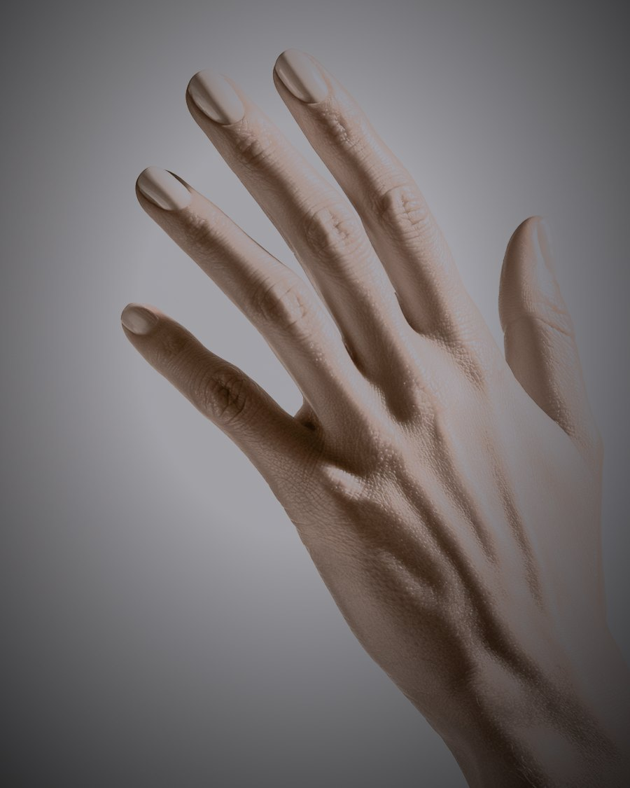

Let's see what your nails are ready for.
One photo of the back of your hand. You'll get a real assessment of your own nails and the service that suits them — in under a minute.
01Hold your hand flat, nails toward the camera
02Daylight if you have it — we'll tell you if it isn't enough
03One photo. Nothing to download, no account
Position · back of the hand

Light
Focus
Framing
looking for your nails…
Reading · ONYX-5
0.00
Measuring image quality…
Aug 2, 2026 · Report NS-0000
Where your nails are today
Why this shape
The next best three
Why these colours
Your full palette
Your measurements6 readings
Your plan3 visits
Where should we send it?
We'll text your report and hold the slot for you.